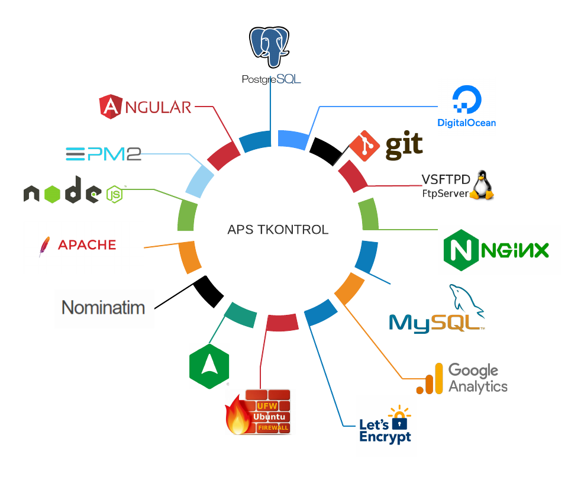
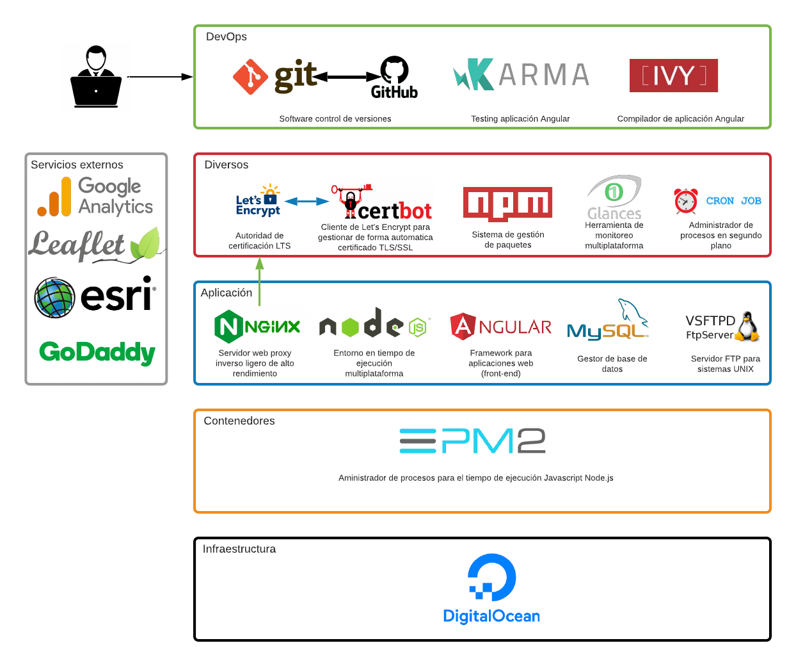

Guía
Revisión
| Fecha | Description |
|---|---|
| 09-09-2021 | * Agregación de sección "Modelo de diseño de software" |
| 20-10-2021 | * Agregación de sección "Accesos" donde se integran todas las credenciales hacia los servidores |
| 28-10-2021 | * Agregación de sección "Accesos" * Agregación de sección "instalaciones y configuraciones" |
| 21-03-2022 | * Documentación sobre comandos de gestión servidores * Agregación sección de "mantenimientos de servidores" * Agregación de comandos para gestionar diferentes servidores alojado en el VPS * Agregación de códigos fundamentales de algunas operaciones del sistemas en la sección "Algoritmos" *Agregación documentación de archivo de configuración VSFTPD en la sección "archivo de configuración" |
Introducción
APS Tkontrol es un software especializado en monitoreo vehículos en tiempo real que tenga conectado dispositivos de DCT, la plataforma esta divida en "módulos" en cual cada uno realiza una tarea especifica.
La infraestructura del software "APS Tkontrol" está compuesta por una seria de herramientas y otros software que en conjunto proporcionan una solución completa de la misma, cada programa, herramientas y tecnología cumplen una función fundamental en la misma, en esta seccíon se describirá para qué se utiliza cada herramienta.
Diagramas

La siguiente imagen muestra la infraestructura de APS Tkontrol en capas 
Infraestructura
DigitalOcean
Es un proveedor de servidores virtuales privado, actualmente se cuenta con dos servidores, cada uno de los servidores contratado tiene configuración igual por lo cual en esta documentación
-
Documentación en la sección: digitalOcean
-
Sitio oficial de la plataforma: link
Contenedores
PM2
Es un administrador de procesos demonio que ayuda administrar y mantener aplicaciones Node.JS, algunas característica que posee este administrador son la siguiente
- Modo cluster
- Soporte de mapa fuente
- Gestión de registro
- Integración de contenedores
- Seguimientos de procesos lanzados
- Microservicios
Documentación en la sección: PM2
Sitio oficial de la plataforma: link
Aplicación
NGINX
Es un servidor web/proxy inverso ligero de alto rendimiento y un proxy para protocolos de correo electrónico.Es software libre y de código abierto, licenciado bajo la Licencia BSD simplificada
-
Configuración e implementado en APS Tkontrol, sección: NGINX
-
Documentación completa de nginx sitio oficial: link
Node.js
Es un entorno en tiempo de ejecución multiplataforma, de código abierto, para la capa del servidor basado en el lenguaje de programación JavaScript, asíncrono, con E/S de datos en una arquitectura orientada a eventos y basado en el motor V8 de Google
Socket.io
Socket.IO es una biblioteca de JavaScript para aplicaciones web en tiempo real. Permite la comunicación bidireccional en tiempo real entre clientes y servidores web. Tiene dos partes: una biblioteca del lado del cliente que se ejecuta en el navegador y una biblioteca del lado del servidor para Node.js.
Angular
Angular es un framework para aplicaciones web desarrollado en TypeScript, de código abierto, mantenido por Google, que se utiliza para crear y mantener aplicaciones web de una sola página.
Mysql
MySQL es un sistema de gestión de bases de datos relacional desarrollado bajo licencia dual: Licencia pública general/Licencia comercial por Oracle Corporation y está considerada como la base de datos de código abierto más popular del mundo.
PostgreSQL
PostgreSQL, también llamado Postgres, es un sistema de gestión de bases de datos relacional orientado a objetos y de código abierto, publicado bajo la licencia PostgreSQL, similar a la BSD o la MIT.
-
Documentación en la sección: PostgreSQL
-
Documentación completa de PostgreSQL sitio oficial: link
VSFTPD
vsftpd, (o demonio FTP muy seguro ), es un servidor FTP para sistemas similares a Unix, incluido Linux. Es el servidor FTP predeterminado en las distribuciones Linux de Ubuntu, CentOS, Fedora, NimbleX, Slackware y RHEL. Tiene la licencia GNU General Public License. Es compatible con IPv6, TLS y FTPS (explícito desde 2.0.0 e implícito desde 2.1.0).
Nominatim
Nominatim es un servicio de geocodificación de uso libre que utiliza como referencia las direcciones y determinados objetos de la base de datos OpenStreetMap. Los detalles de su funcionamiento se pueden consultar en su wiki. Su uso es sencillo de implementar pero, dada la escasez de datos de direcciones de OpenStreetMap en el ámbito rural, el éxito de las operaciones se encuentra en algunas zonas muy comprometido. Al ser OpenStreetMap una base de datos colaborativa, es posible corregir puntualmente cualquier dirección incorrecta o completar datos en aquellas zonas donde no existen.
Apache
El servidor HTTP Apache es un servidor web HTTP de código abierto, para plataformas Unix (BSD, GNU/Linux, etc.), Microsoft Windows, Macintosh y otras, que implementa el protocolo HTTP/1.1 y la noción de sitio virtual según la normativa RFC 2616
Diverso
Let's Encrypt
Es una autoridad de certificación que se puso en marcha el 12 de abril de 2016 y que proporciona certificados X.509 gratuitos para el cifrado de Seguridad de nivel de transporte (TLS) a través de un proceso automatizado diseñado para eliminar el complejo proceso actual de creación manual, la validación, firma, instalación y renovación de los certificados de sitios web seguros.
-
Documentación en la sección: Let's Encrypt
-
Documentación completa de Let's Encrypt sitio oficial: link
Cerbot
Certbot es una herramienta de software gratuita y de código abierto para usar automáticamente certificados Let's Encrypt en sitios web administrados manualmente para habilitar HTTPS.
Certbot está creado por Electronic Frontier Foundation (EFF) , una organización sin fines de lucro 501 (c) 3 con sede en San Francisco, CA, que defiende la privacidad digital, la libertad de expresión y la innovación.
NPM
npm es el sistema de gestión de paquetes por defecto para Node.js, un entorno de ejecución para JavaScript, bajo Artistic License 2.0. Para instalar un nuevo paquete ya sea en la aplicación Angular o el proyecto de Node.js se utiliza la siguiente sintaxis.
npm install NombreDePaquete
npm i NombreDePaquete
Glances
Glances es una herramienta de monitoreo de sistemas multiplataforma escrita en Python.
UFW
UFW o Uncomplicated Firewall es una interfaz para iptables orientada a simplificar el proceso de configuración de un firewall. Aunque iptables es una herramienta sólida y flexible, puede resultar difícil para los principiantes aprender a usarlo para configurar correctamente un firewall. Si desea comenzar a proteger su red y no está seguro de qué herramienta utilizar, UFW puede ser su mejor opción.
- Documentación completa de UFW sitio oficial: link
Amplify
Analizador estático para configuración NGINX. Cuadros de mando personalizados. Descripción general de SLA. Alertas automatizadas. Multi usuario.
- Supervise NGINX, Linux, PHP-FPM y MySQL
- Vea conexiones, solicitudes, estado HTTP, tiempo de respuesta, tráfico y más
- Cree sus propios gráficos para ver métricas por host virtual, estado HTTP y URI
- Comprenda el SLA de su aplicación
- Aprenda a configurar NGINX
- Para mas detalle consulte la documentación completa: link
DevOps
GIT
es un software de control de versiones diseñado por Linus Torvalds, pensando en la eficiencia, la confiabilidad y compatibilidad del mantenimiento de versiones de aplicaciones cuando estas tienen un gran número de archivos de código fuente. Su propósito es llevar registro de los cambios en archivos de computadora incluyendo coordinar el trabajo que varias personas realizan sobre archivos compartidos en un repositorio de código.
Github
GitHub es una forja para alojar proyectos utilizando el sistema de control de versiones Git. Se utiliza principalmente para la creación de código fuente de programas de ordenador. El software que opera GitHub fue escrito en Ruby on Rails. Desde enero de 2010, GitHub opera bajo el nombre de GitHub, Inc.
- Sitio oficial: link
Karma
Karma es el test-runner, es decir, el módulo que permite automatizar algunas de las tareas de las suites de testing, como Jasmine. Karma, además, ha sido desarrollado directamente por el equipo de Angular, lo cual, en cierto modo, nos da alguna garantía de que va a seguir existiendo de aquí a un tiempo, por lo que parece una buena opción.
- Documentación en la sección: Karma
YVY
Ivy es el nombre en clave de Angular canalización de compilación y renderizado de próxima generación Con la versión 9 y posteriores de Angular, el nuevo compilador y las instrucciones de tiempo de ejecución se utilizan de forma predeterminada en lugar del compilador y el tiempo de ejecución más antiguos, conocido como View Engine.